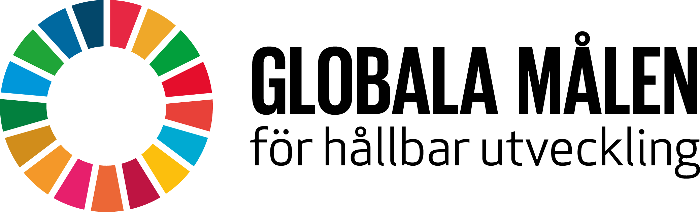

Hållbarhet har blivit väldigt aktuellt under de senaste åren. Och inte mindre aktuellt efter att FN:s hållbarhetsmål, “The 2030 Agenda for Sustainable Development” (SDG), accepterades. SDG består utav 17 mål, på denna sida har vi lyft fram dom viktigaste punkterna för dig som systemutvecklare. Där du kan göra mest skillnad i ditt utvecklande och arbetsliv för att bidra till en mer hållbar framtid både inom miljö, jämställdhet och för att minska välfärdsklyftor.
Ordet: hållbar
betyder någonting som är tillräckligt stadig (i sin uppbyggnad) för att stå emot påfrestningar.
Vi vill också såklart att denna sida ska vara hållbar. Därför har vi valt att ha den i dark mode. Men det blir inte så hållbart om man vill skriva ut, därför går det att byta till light mode. Detta gör även designen mer tillgänglig. Bilder är inte heller det mest hållbara och inte så bra om man vill skriva ut handboken. Därför har vi valt att ha en knapp för att kunna dölja dessa. Detta för att vi vill att sidan ska vara både en trevlig webbsida men också en hållbar och effektiv handbok.
Dessa delar behöver införlivas i systemutvecklingens faser oavsett om du arbetar enligt vattenfall eller en agil form.
I planeringstadiet ska man bland annat planera alternativ som gynnar ekosfären eller har minimal påverkan på ekosfären.
Till exempel kan det innebära att man planerar att köpa in begagnad hårdvara, man ser över sin energiförsörjning och kontrollerar vilken energikälla den server man tänkt använda sig av drivs utav.
I en hållbar analys ska titta på hur man kan minimera sin energianvändning, använda återvunnet material i så stor utsträckning som möjligt, minska användningen utav papper och toner, minska antalet resor i arbetet och minimera frakt utav gods och inte låta lokaler som inte används stå upplysta och outnyttjade.
När produkten är i utveckling ska man för att uppnå hållbar design tänka på att hårdvaran ska vara energieffektiv, man ska använda någon mjukvara för att minska energianvändningen, undersöka och se till att de byggnader som ska inhysa systemen är energieffektiva, implementera hårdvaruvirtualisering, återanvända material och minimera mängden avfall.
När produkten ska implementeras hållbart, tänk på att införskaffa energieffektiv utrustning, göra tester för att hitta fel vad gäller energiförbrukningen, installera en energihanteringsapplikation, utbilda användarna till att använda och hantera systemet på ett energieffektivt sätt och fasa ut det gamla systemet som ska ersättas efter slutförd migrering.
När systemet sedan underhålls så bör man ha regelbunden övervakning på energiförbrukningen, man behöver underhålla systemet för att förlänga dess livslängd och att säkerställa att det fortsätter att köras energieffektivt och man behöver ha fortsatt utbildning kring energieffektiv hantering av systemet.
Under systemets avveckling så ska man om möjligt överlåta det till nya ägare eller återanvända delar utav systemet innan man lämnar det för destruktion och återvinning.
Att inkludera användarna i systemets utvecklingsprocess har visat sig ge bättre system, högre användarnöjdhet och en högre social hållbarhet, vilket också gör att systemet används i högre grad när det är i drift och då också gör mer nytta för den process, ekonomisk samt ekologiska belastning som framtagningen varit.
Här kommer Tips till dig som deltar i systemutvecklingen, oavsett roll i teamet kan du verka för att öka användarmedverkan genom att: